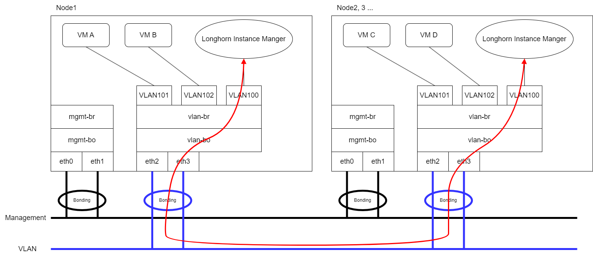

|
本文档采用自动化机器翻译技术翻译。 尽管我们力求提供准确的译文，但不对翻译内容的完整性、准确性或可靠性作出任何保证。 若出现任何内容不一致情况，请以原始 英文 版本为准，且原始英文版本为权威文本。 |
存储网络
SUSE Virtualization使用SUSE Storage为虚拟机和pod提供块设备卷。如果您想将SUSE Storage复制流量与`mgmt`（内置集群网络）或其他集群范围的工作负载隔离，可以使用专用存储网络以获得更好的网络带宽和性能。
有关更多信息，请参见 存储网络中的SUSE Storage文档。
|
避免直接配置SUSE Storage设置，因为这可能导致意外或不希望的系统行为。 |
先决条件
在开始配置存储网络之前，请确保满足以下要求：
-
网络交换机已正确配置，并且为存储网络分配了专用VLAN ID。
-
存储网络的IP范围具有以下特征：
-
使用IPv4 CIDR格式
-
与Kubernetes集群网络不冲突或重叠
以下地址是保留的：
10.42.0.0/16,10.43.0.0/16,10.52.0.0/16`和`10.53.0.0/16。 -
满足集群的要求
所需的IP地址数量使用以下公式计算：
Required number of IPs = (Number of nodes * 2) + (Number of disks * 2) + Number of images to be downloaded or uploaded示例：如果一个集群有五个节点，每个节点有两个磁盘，并且要同时上传十个镜像，则IP范围应大于或等于`/26`（计算：（5 x 2） + （5 x 2） + 10 = 30）。
-
排除SUSE Storage pod和存储网络不得使用的IP地址，例如保留给RWX卷、网关和其他组件的地址。
-
-
Whereabouts CNI已正确安装。
您可以使用命令`ippools.whereabouts.cni.cncf.io`检查`kubectl get crd ippools.whereabouts.cni.cncf.io` CRD是否存在于集群中。
如果返回空字符串，请使用以下命令在 此目录中添加CRDs：
kubectl apply -f https://raw.githubusercontent.com/harvester/harvester/v1.1.0/deploy/charts/harvester/dependency_charts/whereabouts/crds/whereabouts.cni.cncf.io_ippools.yaml kubectl apply -f https://raw.githubusercontent.com/harvester/harvester/v1.1.0/deploy/charts/harvester/dependency_charts/whereabouts/crds/whereabouts.cni.cncf.io_overlappingrangeipreservations.yaml在某些 升级场景中，CNI的安装不正确。
-
所有虚拟机已停止。
您可以使用命令`kubectl get -A vmi`检查虚拟机的状态，该命令应返回空字符串。
SUSE Virtualization通过SUSE Virtualization UI向已停止的虚拟机发送优雅的关闭信号。然而，工作负载会被中断，并且在您确认存储网络配置成功应用后，必须手动启动虚拟机才能恢复可用性。
-
所有附加到SUSE Storage卷的pod已停止。
-
所有正在进行的镜像上传和下载要么已完成，要么已删除。
SUSE Storage复制流量路由
SUSE Storage复制流量的路由取决于虚拟机VLAN流量和SUSE Storage存储网络是否共享相同的物理接口或使用不同的接口。
-
相同的物理接口：在以下示例中，`eth2`和`eth3`用于虚拟机VLAN流量，而SUSE Storage存储网络也使用它们。红线表示SUSE Storage通过`eth3`发送复制流量。

您必须在集群网络和VLAN网络配置中包含`eth2`和`eth3`。
-
不同的物理接口：在以下示例中，`eth2`和`eth3`用于虚拟机VLAN流量，而`eth4`和`eth5`用于SUSE Storage存储网络。红线表示SUSE Storage通过`eth4`发送复制流量。

您必须在集群网络和VLAN网络配置中包含`eth4`和`eth5`。
`storage-network`设置
storage-network设置允许您配置在需要隔离时用于隔离集群内存储流量的网络。
您可以使用用户界面或CLI启用和禁用存储网络。当设置启用时，您必须通过配置某些字段来构建Multus NetworkAttachmentDefinition CRD。
一旦应用了`storage-network`设置，SUSE Virtualization将执行以下操作：
-
停止与SUSE Storage卷、Prometheus、Grafana、Alertmanager和VM导入控制器相关的所有pod。
-
创建一个新的`NetworkAttachmentDefinition`并更新SUSE Storage存储网络设置。
-
重启所有`instance-manager`和`backing-image-manager`pod以应用新的配置。
配置步骤
-
UI
-
CLI
|
强烈建议使用SUSE Virtualization用户界面来配置`storage-network`设置。 |
==== 启用存储网络
-
前往*高级 → 设置 → 存储网络*。
-
选择*启用*。
-
配置*VLAN ID*、集群网络、*IP范围*和*排除*字段以构建Multus
NetworkAttachmentDefinitionCRD。 -
单击*保存*。

==== 禁用存储网络
-
前往*高级 → 设置 → 存储网络*。
-
选择*禁用*。
-
单击*保存*。
一旦存储网络被禁用，SUSE Storage将开始使用pod网络进行存储相关操作。

您可以使用以下命令来配置`storage-network`设置。
kubectl edit settings.harvesterhci.io storage-network在以下情况下，存储网络会自动启用：
-
`value`字段包含有效的JSON字符串。
apiVersion: harvesterhci.io/v1beta1 kind: Setting metadata: name: storage-network value: '{"vlan":100,"clusterNetwork":"storage","range":"192.168.0.0/24", "exclude":["192.168.0.100/32"]}' -
`value`字段为空。
apiVersion: harvesterhci.io/v1beta1 kind: Setting metadata: name: storage-network value: ''
当您移除`value`字段时，存储网络将被禁用。
apiVersion: harvesterhci.io/v1beta1
kind: Setting
metadata:
name: storage-network|
SUSE Virtualization 将 JSON 字符串中的额外无关字符视为不同的配置。 |
更改存储网络的 MTU
请参见 更改附加存储网络的网络配置的 MTU。
配置后步骤
|
SUSE Virtualization 不会自动启动虚拟机。您必须确保配置正确并成功应用，然后在必要时启动虚拟机。 |
-
使用以下命令验证
storage-network设置的状态为True，类型为configured：kubectl get settings.harvesterhci.io storage-network -o yaml示例：
apiVersion: harvesterhci.io/v1beta1 kind: Setting metadata: annotations: storage-network.settings.harvesterhci.io/hash: da39a3ee5e6b4b0d3255bfef95601890afd80709 storage-network.settings.harvesterhci.io/net-attach-def: "" storage-network.settings.harvesterhci.io/old-net-attach-def: "" creationTimestamp: "2022-10-13T06:36:39Z" generation: 51 name: storage-network resourceVersion: "154638" uid: 2233ad63-ee52-45f6-a79c-147e48fc88db status: conditions: - lastUpdateTime: "2022-10-13T13:05:17Z" reason: Completed status: "True" type: configured -
验证 SUSE Storage pods（
instance-manager和backing-image-manager）是否已准备好，并且它们的网络是否已正确配置。您可以使用以下命令检查每个 pod：
kubectl -n longhorn-system describe pod <pod-name>类似于以下的错误表明存储网络已耗尽可用的 IP 地址。您必须重新配置存储网络，以确保有足够的 IP 范围。
Events: Type Reason Age From Message ---- ------ ---- ---- ------- .... Warning FailedCreatePodSandBox 2m58s kubelet Failed to create pod sandbox: rpc error: code = Unknown desc = failed to setup network for sandbox "04e9bc160c4f1da612e2bb52dadc86702817ac557e641a3b07b7c4a340c9fc48": plugin type="multus" name="multus-cni-network" failed (add): [longhorn-system/backing-image-ds-default-image-lxq7r/7d6995ee-60a6-4f67-b9ea-246a73a4df54:storagenetwork-sdfg8]: error adding container to network "storagenetwork-sdfg8": error at storage engine: Could not allocate IP in range: ip: 172.16.0.1 / - 172.16.0.6 / range: net.IPNet{IP:net.IP{0xac, 0x10, 0x0, 0x0}, Mask:net.IPMask{0xff, 0xff, 0xff, 0xf8}} ....如果存储网络已耗尽可用的 IP 地址，您在上传或下载镜像时可能会遇到类似的错误。您必须删除受影响的镜像，并重新配置存储网络，以确保有足够的 IP 范围。
-
验证在
k8s.v1.cni.cncf.io/network-status注释中是否存在名为lhnet1的接口。该接口的 IP 地址必须在指定的 IP 范围内。您可以使用以下命令检索 SUSE Storage
instance-managerpods 的列表：kubectl get pods -n longhorn-system -l longhorn.io/component=instance-manager -o yaml示例：
apiVersion: v1 kind: Pod metadata: annotations: cni.projectcalico.org/containerID: 2518b0696f6635896645b5546417447843e14208525d3c19d7ec6d7296cc13cd cni.projectcalico.org/podIP: 10.52.2.122/32 cni.projectcalico.org/podIPs: 10.52.2.122/32 k8s.v1.cni.cncf.io/network-status: |- [{ "name": "k8s-pod-network", "ips": [ "10.52.2.122" ], "default": true, "dns": {} },{ "name": "harvester-system/storagenetwork-95bj4", "interface": "lhnet1", "ips": [ "192.168.0.3" ], "mac": "2e:51:e6:31:96:40", "dns": {} }] k8s.v1.cni.cncf.io/networks: '[{"namespace": "harvester-system", "name": "storagenetwork-95bj4", "interface": "lhnet1"}]' k8s.v1.cni.cncf.io/networks-status: |- [{ "name": "k8s-pod-network", "ips": [ "10.52.2.122" ], "default": true, "dns": {} },{ "name": "harvester-system/storagenetwork-95bj4", "interface": "lhnet1", "ips": [ "192.168.0.3" ], "mac": "2e:51:e6:31:96:40", "dns": {} }] kubernetes.io/psp: global-unrestricted-psp longhorn.io/last-applied-tolerations: '[{"key":"kubevirt.io/drain","operator":"Exists","effect":"NoSchedule"}]' Omitted... -
测试 SUSE Storage pods 之间的通信。
存储网络专用于 SUSE Storage pods 之间的内部通信，从而实现高性能和可靠性。然而，存储网络仍然依赖于 外部网络基础设施 进行连接（类似于 虚拟机 VLAN 网络 的功能）。当外部网络未正确连接和配置时，您可能会遇到以下问题：
-
新创建的虚拟机在
Not-Ready状态下卡住。 -
longhorn-managerpod 日志包含错误信息。示例：
longhorn-manager-j6dhh/longhorn-manager.log:2024-03-20T16:25:24.662251001Z time="2024-03-20T16:25:24Z" level=error msg="Failed rebuilding of replica 10.0.16.26:10000" controller=longhorn-engine engine=pvc-0a151c59-ffa9-4938-9c86-59ebb296bc88-e-c2a7fe77 error="proxyServer=10.52.6.33:8501 destination=10.0.16.23:10000: failed to add replica tcp://10.0.16.26:10000 for volume: rpc error: code = Unknown desc = failed to get replica 10.0.16.26:10000: rpc error: code = Unavailable desc = all SubConns are in TransientFailure, latest connection error: connection error: desc = \"transport: Error while dialing dial tcp 10.0.16.26:10000: connect: no route to host\"" node=oml-harvester-9 volume=pvc-0a151c59-ffa9-4938-9c86-59ebb296bc88要测试 SUSE Storage pods 之间的通信，请执行以下步骤：
-
获取在上一步中识别的每个实例管理器 pod 的存储网络 IP（每个节点一个）。
示例：
instance-manager-43f1624d14076e1d95cd72371f0316e2 storage network IP: 10.0.16.8 instance-manager-ba38771e483008ce61249acf9948322f storage network IP: 10.0.16.14 -
登录到这些 pods。
当您运行命令
ip addr时，输出包含与 pod 注释中的 IP 相同的 IP。在以下示例中，一个 IP 用于 pod 网络，另一个用于存储网络。示例：
$ kubectl exec -i -t -n longhorn-system instance-manager-ba38771e483008ce61249acf9948322f -- /bin/sh $ ip addr 1: lo: <LOOPBACK,UP,LOWER_UP> mtu 65536 qdisc noqueue state UNKNOWN group default qlen 1000 link/loopback 00:00:00:00:00:00 brd 00:00:00:00:00:00 inet 127.0.0.1/8 scope host lo ... 3: eth0@if2277: <BROADCAST,MULTICAST,UP,LOWER_UP> mtu 1450 qdisc noqueue state UP group default // pod network link link/ether 0e:7c:d6:77:44:72 brd ff:ff:ff:ff:ff:ff link-netnsid 0 inet 10.52.6.146/32 scope global eth0 ... 4: lhnet1@if2278: <BROADCAST,MULTICAST,UP,LOWER_UP> mtu 1500 qdisc noqueue state UP group default // storage network link, note the MTU value link/ether fe:92:4f:fb:dd:20 brd ff:ff:ff:ff:ff:ff link-netnsid 0 inet 10.0.16.14/20 brd 10.0.31.255 scope global lhnet1 ... $ ip route default via 169.254.1.1 dev eth0 10.0.16.0/20 dev lhnet1 proto kernel scope link src 10.0.16.14 169.254.1.1 dev eth0 scope link -
在一个 pod 中启动一个简单的 HTTP 服务器。
您必须明确将此 HTTP 服务器绑定到存储网络 IP。
示例：
$ python3 -m http.server 8000 --bind 10.0.16.14 (replace with your pod storage network IP) -
在另一个 pod 中测试 HTTP 服务器。
示例：
From instance-manager-43f1624d14076e1d95cd72371f0316e2 (IP 10.0.16.8) $ curl http://10.0.16.14:8000当存储网络正常工作时，
curl命令返回 HTTP 服务器上的文件列表。 -
（可选）排除问题。
存储网络可能因外部网络问题而发生故障，例如：
-
与存储网络相关的物理 NIC（安装在 SUSE Virtualization 节点上）未在外部交换机中添加到同一 VLAN。
-
外部交换机未正确连接和配置。
-
-
-
一旦配置得到验证，您可以在必要时手动启动虚拟机。
最佳实践
-
在为存储网络配置IP范围时，请确保分配的IP地址能够满足集群未来的需求。这很重要，因为SUSE Storage pods（
instance-manager`和`backing-image-manager）在向集群添加新节点或在存储网络配置后向节点添加更多磁盘时停止运行，并且当所需的IP数量超过分配的IP时。解决此问题涉及使用正确的IP范围重新配置存储网络。SUSE Storage pods 使用存储网络如下：
-
instance-managerpods：实例管理器组件被 在 SUSE Storage v1.5.0 中合并。每个节点需要一个 IP 地址。在升级期间，这些 pods 的旧版本和新版本同时存在，旧版本在升级完成后被删除。 -
backing-image-dspods：这些 pods 处理即时上传和下载的底层镜像数据源，并在镜像上传和下载完成后被去除。 -
backing-image-managerpods：每个磁盘需要一个 IP 地址。在升级期间，这些 pods 的旧版本和新版本同时存在，旧版本在升级完成后被删除。
-
-
在非-
mgmt集群网络上配置存储网络，以确保 SUSE Storage 复制流量与 Kubernetes 控制平面流量完全隔离。使用mgmt是可能的，但不推荐，因为它会对控制平面网络性能产生负面影响（资源和带宽争用）。仅在您的集群存在与 NIC 相关的限制，并且能够完全隔离流量时使用mgmt。